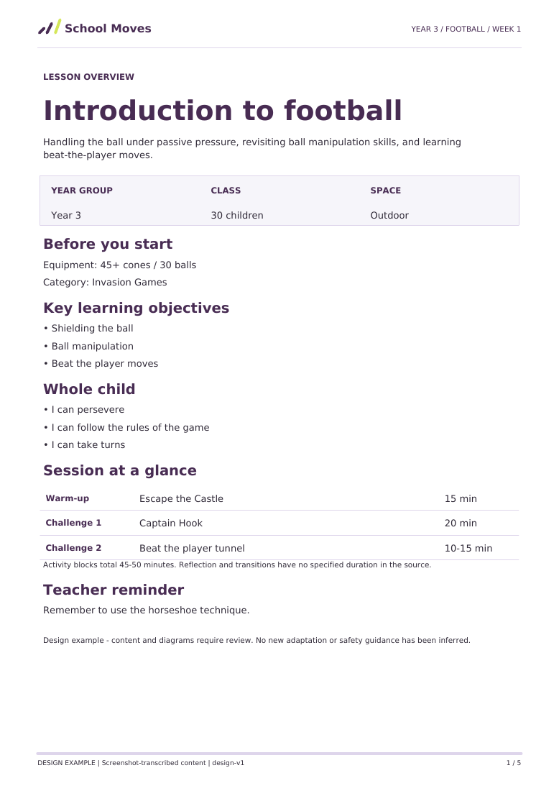
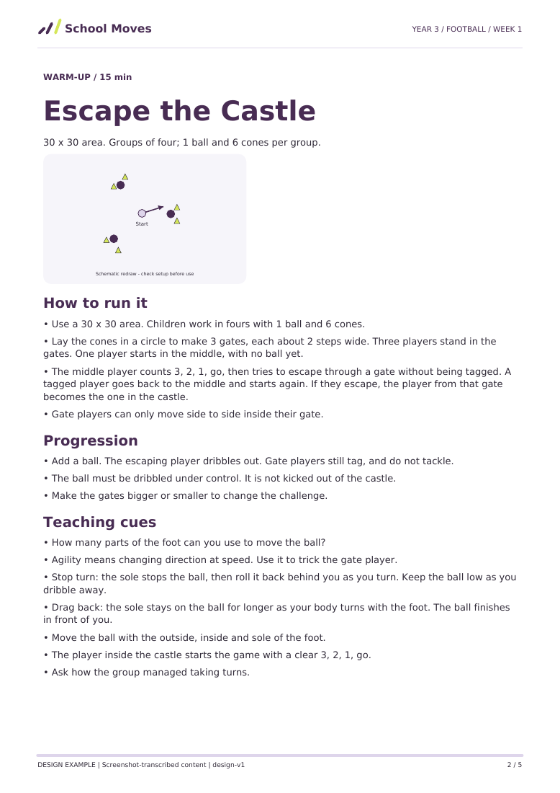
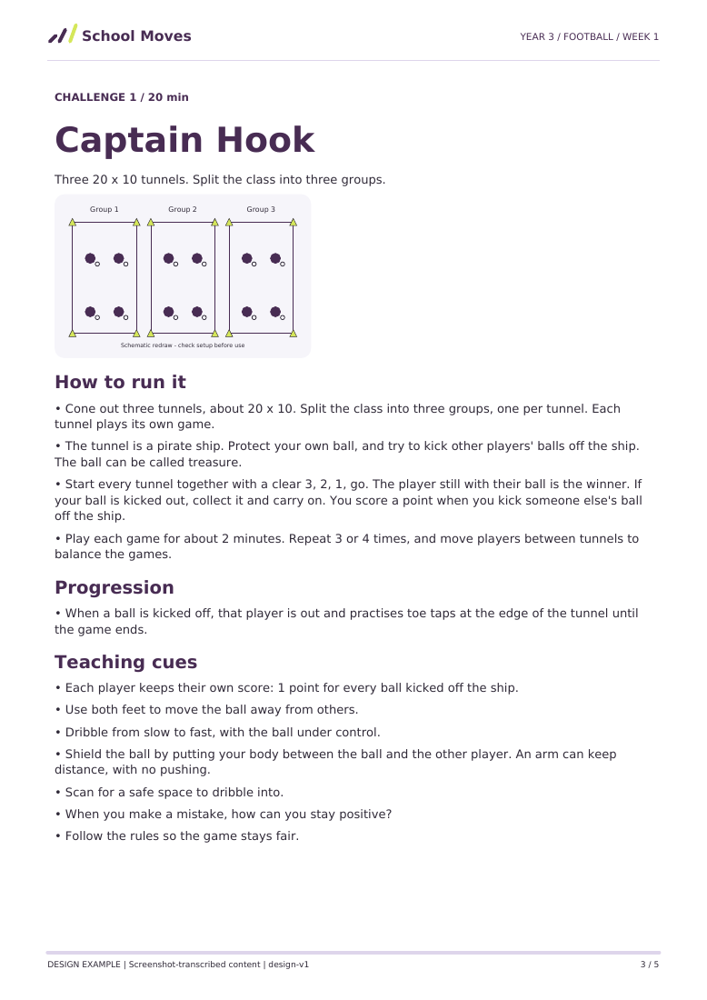
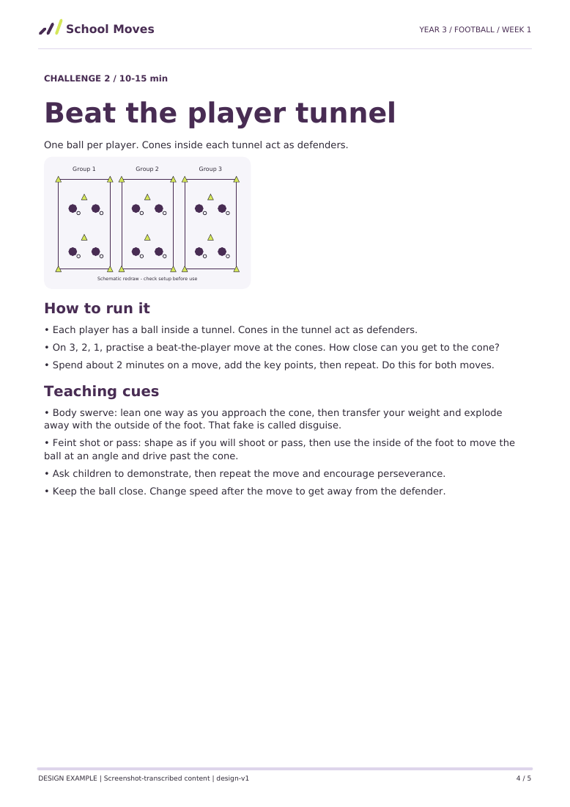
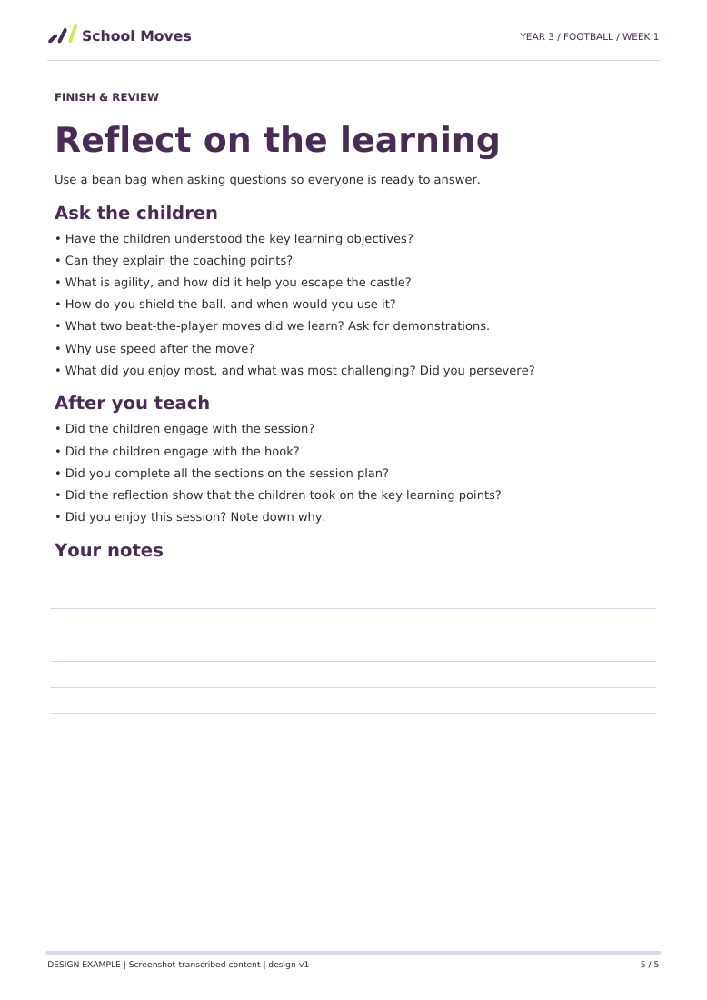

One lesson record / two presentations
A plan you can take outside.
Five A4 pages: overview, one page per activity, and reflection. Readable typography, restrained colour and vector setup diagrams. Generated from the same lesson JSON used by the webpage.
Design example, not educator-approved teaching material. Diagram redraws require review. Teacher notes are blank printed lines.




